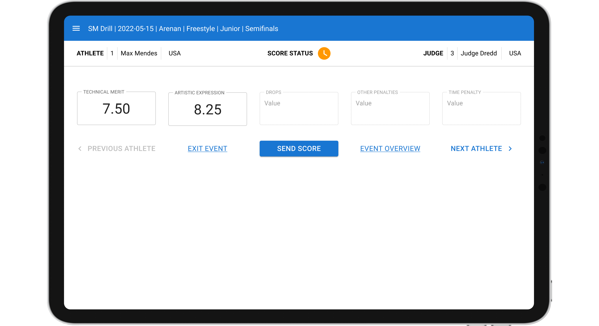
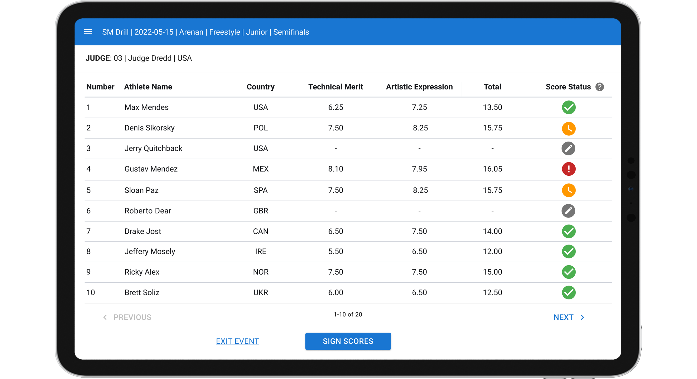
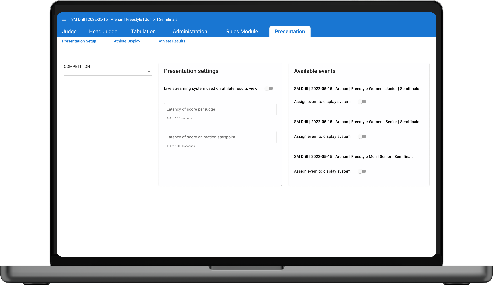

Svenska Drillförbundet
The Swedish Baton Twirling Association needed to move on from using pen and paper in combination with Excel sheets. Their needs were competition setup and administration, judge scoring during competitions and live presentation of results during events.


